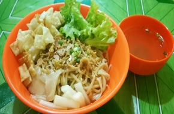

< < Daftar resep
bahan |
cara memasak

Mie Pangsit
Mie pangsit yang ditaburi dengan daging ayam mungkin akan sering kita dengar dan cukup terkenal yang biasanya dijajakan oleh pedagang kaki lima di pinggir jalan. Kadang Mie ayam memang lebih dikenal dengan sebutan mie pangsit. Ada banyak macam dari mie ayam. Bedanya adalah pada topingnya. Apakah Anda ingin menyajikannya dengan ayam, pangsit basah, pangsit goreng, atau bakso.
Daripada Anda sering membeli mie pangsit yang dijajakan di luar dan belum mengetahui kehigienisannya, berikut ini kami akan rangkum cara membuat mie pangsit sederhana yang enak yang dapat Anda buat di rumah.
Bahan-bahan:
- 1/2 dada ayam fillet (potong dadu)
- Mie giling
- Kulit Pangsit
- Bakso
- Siomay
- 2 Tangkai daun Bawamg (iris)
- Bawang goreng (untuk taburan)
- Saus tomat dan saus sambal
- 150 gr gula merah (sisir)
- 450 ml air putih
- Garam secukupnya
- Kaldu bubuk secukupnya
- Kecap ikan/kecap asin secukupnya
- Telur 1 Butir
Cara Memasak:
- Dalam panci didihkan 450 ml air putih
- Setelah mendidih masukkan dada ayam fillet yang sudah dipotong dadu
- Tumis bumbu yang sudah dihaluskan sampai matang,Setelah itu masukkan bumbu yang sudah ditumis ke dalam rebusan dada fillet
- Masukkan gula merah, kecap, garam, kaldu bubuk dan daun bawang
- Aduk sebentar dan koreksi rasa, jika dirasa sudah pas, tutup panci dan ungkep sampai bumbu meresap ke dalam dada fillet
- Rebus mie, bakso, dan siomay
- Goreng kulit pangsit
- Dalam 1 mangkuk beri kecap ikan/kecap asin kurang lebih 2 sdm.
- Lalu masukkan mie yang sudah direbus, aduk rata
- Tambahkan, sawi yang sudah direbus, siomay, bakso dan ayam, dan pangsit goreng yang telah disiapkan
- Taburi daun bawang dan bawang goreng diatasnya
Lengkapi lagi dengan sambal, saus tomat dan saus sambal.
kembali keatas
< < Daftar resep